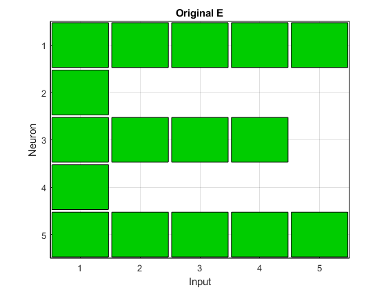
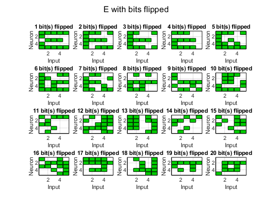
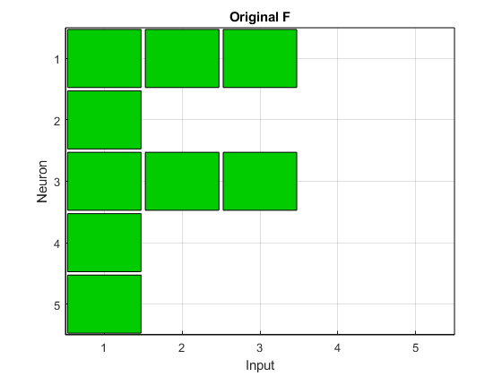
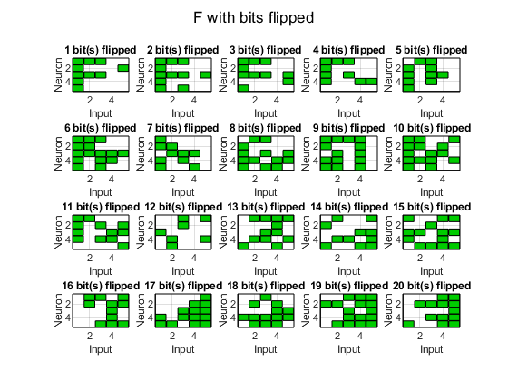
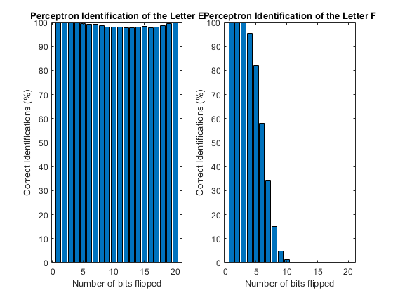
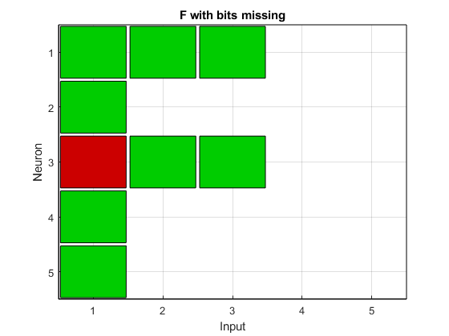

Contents
%Project 1, Perceptron %David Melanson %%Input Section clear all; clc; cla; clf; close all; format short rng('shuffle') num = randi(randi(100)); for i = 1:num rng('shuffle') end % Binary inputs for letters E and F Pe = [ 1 1 1 1 1, ... 1 0 0 0 0, ... 1 1 1 1 0, ... 1 0 0 0 0, ... 1 1 1 1 1 ]'; Pf = [ 1 1 1 0 0, ... 1 0 0 0 0, ... 1 1 1 0 0, ... 1 0 0 0 0, ... 1 0 0 0 0 ]'; P = cat(2, Pe, Pf); % E target is 1, F is 0 T = [1 0]; %Input layer [R, ~] = size(P); [S, Q] = size(T); %Initialize network parameters %Change_Marker %Initialize weights randomly W = rand(S,R); Wp = W(:, 1:R-1); %watchon; %cla; E=1; %sum squared error performance function while (sse(E)) Ai = hardlim(W*P); Ei = T-Ai; dWq = learnp(W, P, [], [], [], [], Ei, [], [], [], [], []); W = W+dWq; A = hardlim(W*P); E = T-A; end %watchoff; fprintf('\nTarget is ') fprintf('%2i', T) fprintf('\nSolution reached ') fprintf('%2i', A) fprintf('\nWith weights\n') fprintf('%1f %1f %1f %1f %1f\n', W) Wp = W(:, 1:R-1); Bp = W(:, R);
Target is 1 0 Solution reached 1 0 With weights -0.723210 -0.979735 -0.325236 1.316211 1.781148 -0.432034 0.018665 0.866019 0.858183 0.254867 -0.509471 -0.990766 -0.098240 1.800708 0.302641 -0.082366 0.184877 0.327790 0.516877 0.646143 -0.699938 1.222999 1.213505 1.486311 1.576534
Loop to test if network will properly identify noisy E and Fs
goes through 10000 iterations, flipping one more bit every loop until
%its tested up to 20 bits flipped numBits = 20; iterations = 10000; identifiedE = [iterations, numBits]; identifiedF = [iterations, numBits]; for j = 1:numBits for i = 1:iterations testE = makeNoisy(Pe, j); resultE = hardlim(W*testE); if resultE > 0 identifiedE(i, j) = 1; else identifiedE(i, j) = 0; end testF = makeNoisy(Pf, j); resultF = hardlim(W*testF); if resultF == 0 identifiedF(i, j) = 1; else identifiedF(i, j) = 0; end end end identifiedE = sum(identifiedE)./(iterations/100); identifiedF = sum(identifiedF)./(iterations/100);
Plotting of original E and F, creation of examples of noisy E and F
and graphing of results of the above identifications
figure; hintonw(reshape(Pe, [5,5])') title('Original E') figure; for i = 1:4 for j = 1:5 num = (5*(i-1))+j; subplot(4, 5, num); example = makeNoisy(Pe, num); example = reshape(example, [5,5])'; hintonw(example); title([num2str(num), ' bit(s) flipped']) end end sgtitle('E with bits flipped') figure; hintonw(reshape(Pf, [5,5])') title('Original F') figure; for i = 1:4 for j = 1:5 num = j+(5*(i-1)); subplot(4, 5, num); example = makeNoisy(Pf, num); example = reshape(example, [5,5])'; hintonw(example); title([num2str(num), ' bit(s) flipped']) end end sgtitle('F with bits flipped'); figure; subplot(1,2,1); bar(1:numBits, identifiedE); title('Perceptron Identification of the Letter E') xlabel('Number of bits flipped') ylabel('Correct Identifications (%)') subplot(1,2,2) bar(1:numBits, identifiedF); title('Perceptron Identification of the Letter F') xlabel('Number of bits flipped') ylabel('Correct Identifications (%)') fprintf('\n\nFor the letter "E":\n\n\n') for i = 1:numBits fprintf('Identified %1g percent of inputs with %d bit(s) flipped.\n', identifiedE(i), i); end fprintf('\n\nFor the letter "F":\n\n\n') for i = 1:numBits fprintf('Identified %1g percent of inputs with %d bit(s) flipped.\n', identifiedF(i), i); end figure; hintonw(reshape(makeNoisy2(Pf, 1), [5,5])') title('F with bits missing') %function that takes an array and a number of bits to flip and does that function retArr = makeNoisy(passArr, numBits) diffEl = 0; retArr = passArr; while(diffEl ~= numBits) row = randi(25); if passArr(row, 1) == 0 retArr(row, 1) = 1; else retArr(row, 1) = 0; end diffEl = sum(sum(retArr ~= passArr)); end end %function that takes an array and a number of bits to flip and does that function retArr = makeNoisy2(passArr, numBits) diffEl = 0; retArr = passArr; while(diffEl ~= numBits) row = randi(25); retArr(row, 1) = -1*(passArr(row, 1)); diffEl = sum(sum(retArr ~= passArr)); end end
For the letter "E": Identified 100 percent of inputs with 1 bit(s) flipped. Identified 100 percent of inputs with 2 bit(s) flipped. Identified 100 percent of inputs with 3 bit(s) flipped. Identified 99.76 percent of inputs with 4 bit(s) flipped. Identified 99.43 percent of inputs with 5 bit(s) flipped. Identified 99.37 percent of inputs with 6 bit(s) flipped. Identified 99.15 percent of inputs with 7 bit(s) flipped. Identified 98.7 percent of inputs with 8 bit(s) flipped. Identified 98.11 percent of inputs with 9 bit(s) flipped. Identified 98.11 percent of inputs with 10 bit(s) flipped. Identified 98.12 percent of inputs with 11 bit(s) flipped. Identified 97.81 percent of inputs with 12 bit(s) flipped. Identified 97.69 percent of inputs with 13 bit(s) flipped. Identified 97.98 percent of inputs with 14 bit(s) flipped. Identified 98.27 percent of inputs with 15 bit(s) flipped. Identified 97.93 percent of inputs with 16 bit(s) flipped. Identified 98.04 percent of inputs with 17 bit(s) flipped. Identified 98.74 percent of inputs with 18 bit(s) flipped. Identified 99.52 percent of inputs with 19 bit(s) flipped. Identified 99.94 percent of inputs with 20 bit(s) flipped. For the letter "F": Identified 100 percent of inputs with 1 bit(s) flipped. Identified 100 percent of inputs with 2 bit(s) flipped. Identified 99.73 percent of inputs with 3 bit(s) flipped. Identified 95.6 percent of inputs with 4 bit(s) flipped. Identified 82.02 percent of inputs with 5 bit(s) flipped. Identified 58.18 percent of inputs with 6 bit(s) flipped. Identified 34.22 percent of inputs with 7 bit(s) flipped. Identified 14.95 percent of inputs with 8 bit(s) flipped. Identified 4.88 percent of inputs with 9 bit(s) flipped. Identified 1.29 percent of inputs with 10 bit(s) flipped. Identified 0.28 percent of inputs with 11 bit(s) flipped. Identified 0.05 percent of inputs with 12 bit(s) flipped. Identified 0 percent of inputs with 13 bit(s) flipped. Identified 0 percent of inputs with 14 bit(s) flipped. Identified 0 percent of inputs with 15 bit(s) flipped. Identified 0 percent of inputs with 16 bit(s) flipped. Identified 0 percent of inputs with 17 bit(s) flipped. Identified 0 percent of inputs with 18 bit(s) flipped. Identified 0 percent of inputs with 19 bit(s) flipped. Identified 0 percent of inputs with 20 bit(s) flipped.     